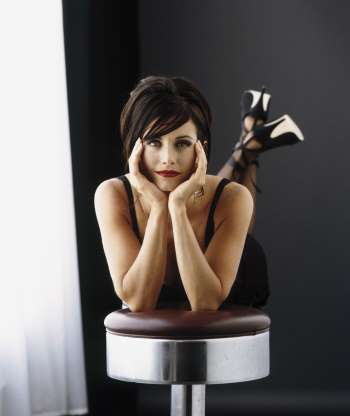
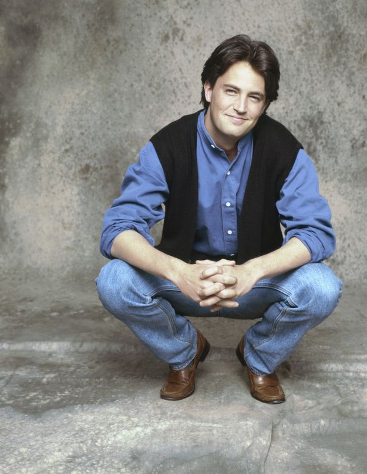
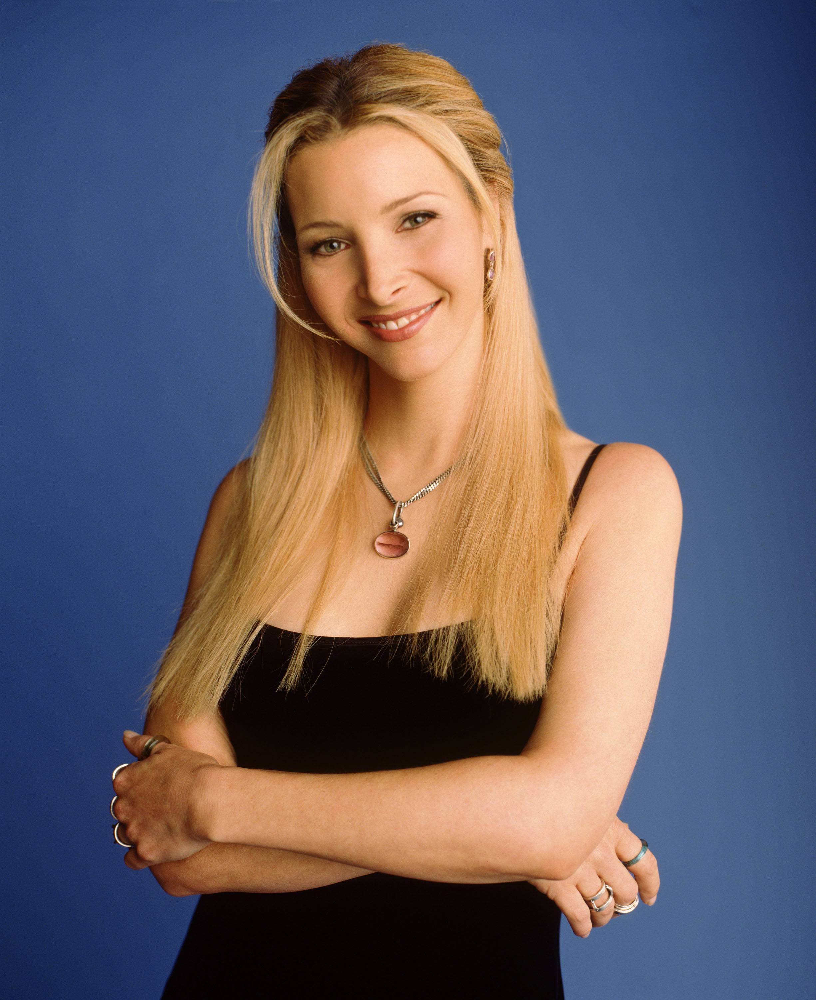
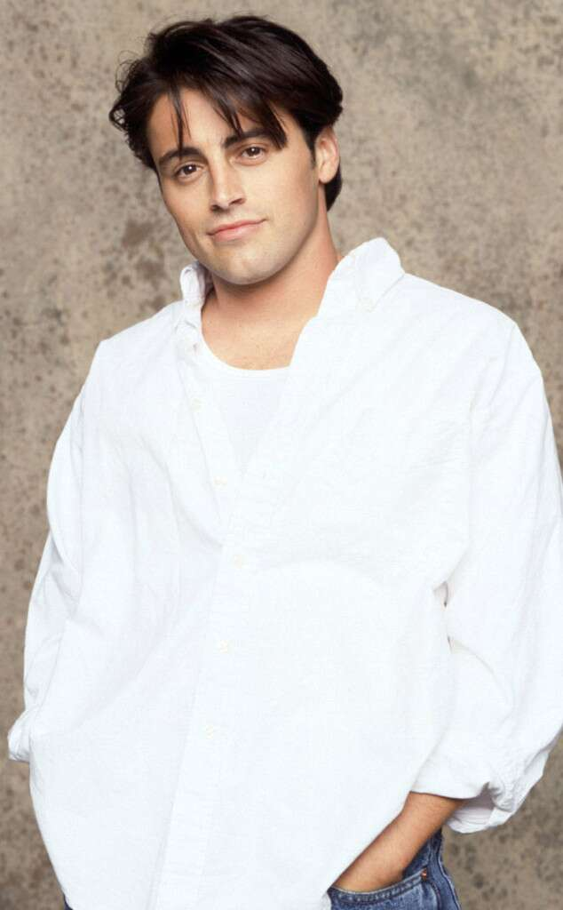
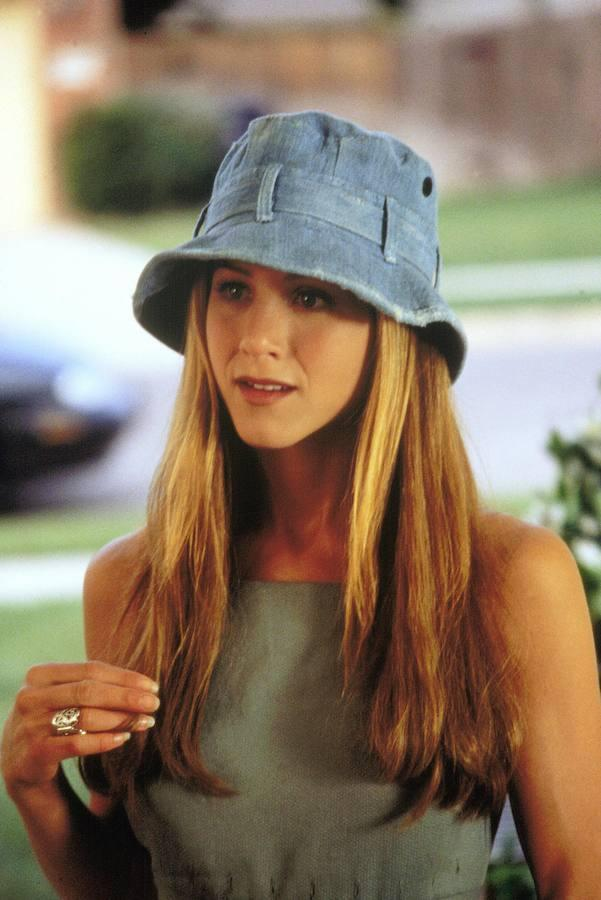
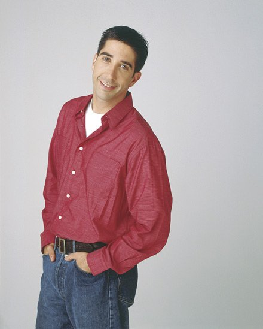

Courtney Bass Cox
Es una actriz, modelo, productora de televisión y directora de cine estadounidense, célebre por su interpretación de Monica Geller en la popular serie de televisión Friends y por su participación en la saga de películas de Scream. Estuvo nominada a un Globo de Oro como mejor actriz por la serie televisiva Cougar Town en 2010.
Matthew Perry
Es un actor y escritor estadounidense-canadiense. Es conocido principalmente por su papel de Chandler Bing en la serie Friends de NBC, por la que obtuvo una nominación a los Emmy en 2002. Perry también ha aparecido en series como Studio 60 on the Sunset Strip y películas como The Whole Nine Yards, su secuela The Whole Ten Yards, y 17 Again. Además, fue nominado para un Premio Emmy y un Globo de Oro por su papel en el filme The Ron Clark Story.
Lisa Kudrow
Lisa Valerie Kudrow-Stern (Los Ángeles, California, 30 de julio de 1963)1 es una actriz, comediante, escritora y directora de cine estadounidense nominada a los Globos de Oro, ganadora de un premio Emmy y de dos Premio del Sindicato de Actores por su interpretación de Phoebe Buffay en la popular comedia de situación Friends. También ha protagonizado las series The Comeback y Web Therapy.
Matt LeBlanc
A partir de 2002-2004, LeBlanc fue nominado tres años consecutivos como Mejor Actor en los Emmy Awards, mientras que a partir de 2003-2005 recibió tres nominaciones para Mejor actor en los Golden Globe Awards. En 2000, ganó el Editor's Choice en TV Guide Awards (Friends). En 2002, ganó TV —Elección Actor— Comedia en el Teen Choice Awards (Friends). En 2005, ganó el Masculino favorito de televisión en la Star People's Choice Awards. Fue nominado a Mejor actor de comedia a los Emmy Awards 2011 por su interpretación de sí mismo en la serie Episodes, y lo ganó en 2012; ese mismo año también obtuvo el Globo de Oro como Mejor actor en serie de comedia, por Episodes.
Jennifer Aniston
Goza de una exitosa carrera en cine, sobre todo en comedias románticas, donde ha participado en distintas producciones cinematográficas de Hollywood, protagonizó la exitosa película de culto de terror y Comedia: Leprechaun (La noche del duende en España o El duende maldito en Latinoamérica) de 1993 donde compartió protagonismo con Warwick Davis, posteriormente se ganó los elogios de la crítica por sus interpretaciones en películas independientes She's the One, Office Space, Amigos con dinero y The Good Girl. Tras finalizar la serie de televisión Friends, sus mayores éxitos comerciales han sido las películas Todopoderoso, Along Came Polly, Viviendo con mi ex, Marley y yo y A él no le gustas tanto.
David Schwimmer
David Lawrence Schwimmer (Flushing, Queens, Nueva York, Nueva York; 2 de noviembre de 1966) es un actor y director de televisión y cine estadounidense de origen judío. Nacido en Nueva York, se mudó a Los Ángeles con su familia a la edad de dos años y comenzó su carrera como actor al participar en obras escolares escenificadas en la Beverly Hills High School.1 En 1993, se graduó de la Universidad Northwestern con un título Bachelor of Arts en teatro y lenguaje. Después de su graduación, fue cofundador de la Lookingglass Theatre Company. Sin embargo, durante gran parte de finales de la década de 1980 vivió en Los Ángeles siendo un actor desempleado.
